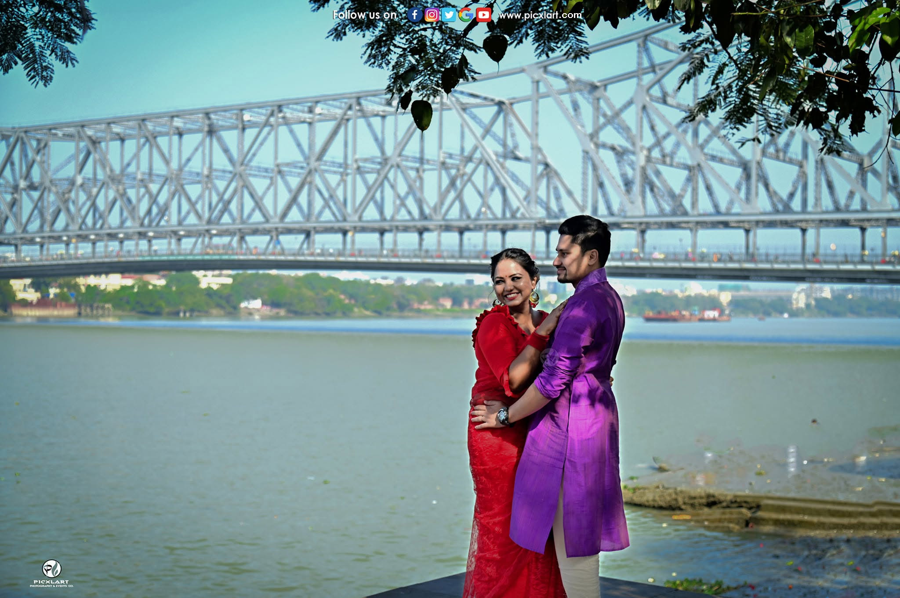
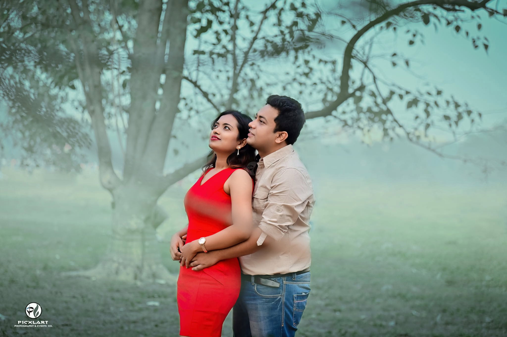

Kolkata, known as the City of Joy, seamlessly weaves timeless heritage with modern elegance. From grand colonial monuments and narrow vintage streets to tranquil lakes, art hubs, and luxury resorts, the city offers an endless palette for couples planning their pre-wedding photoshoot.
Whether you dream of a romantic sunset ride on a traditional wooden boat or a vintage retro tram ride, our team at Picxlart Photography has put together this ultimate guide featuring all 25 top pre-wedding photoshoot locations in Kolkata.
1. Princep Ghat
1. Princep Ghat & River Ganges Free Outdoor Spot
The Corinthian white pillars of Princep Ghat with the majestic Vidyasagar Setu in the backdrop offer Kolkata's most iconic view. Renting a decorated wooden boat on the river Ganges during golden hour creates magical couple portraits.
2. Smaranika Tram Museum
2. Smaranika Tram Museum Heritage Vibe / Entry Fee
Located near Maidan, this restored vintage tram café lets couples relive classic Calcuttan romance. Dressing up in a traditional Dhuti-Panjabi and Chapa saree brings out authentic nostalgic vibes.
3. Acharya Jagadish Chandra Bose Botanical Garden
3. Acharya Jagadish Chandra Bose Botanical Garden Lush Greenery
Spanning over 270 acres in Shibpur, it offers giant lily pads, winding shaded pathways, and the world-famous Great Banyan Tree for natural, tranquil frames.
4. Rabindra Sarobar Lake
4. Rabindra Sarobar Lake Nature / Serene
A calm artificial lake in South Kolkata surrounded by dense greenery, stone paved walkways, and vintage lamp posts. Perfect for early morning couple walks and natural frames.
5. Eco Park & Eco Island
5. Eco Park (New Town) Paid Entry
Featuring replicas of the Seven Wonders of the World, tea gardens, lakeside bridges, and colorful wall art—allowing multiple themes in a single shoot location.

6. Mallick Ghat Flower Market
6. Mallick Ghat Flower Market Vibrant Street Vibe
One of Asia’s largest flower markets located near Howrah Bridge. Mounds of bright yellow marigolds and sunflowers provide a unique, lively, and cinematic street photography setting.
7. Bow Barracks
7. Bow Barracks Vintage European Vibe
Tucked behind Bowbazar, the red-brick Anglo-Indian colonial buildings and narrow alleys exude cozy retro charm and unique architectural frames.
8. Victoria Memorial
8. Victoria Memorial Ticketed Entry
The white marble monument, vast manicured lawns, and reflections in surrounding ponds bring British-era architectural elegance and grand royal aesthetic.
9. Maidan
9. Kolkata Maidan Open Grasslands
Vast green open fields with grazing horses, vintage tram tracks passing by, and soft golden sunlight—unbeatable for airy, romantic, and natural portraits.
10. South Park Street Cemetery
10. South Park Street Cemetery Gothic / Heritage
For couples seeking artistic Gothic architecture, moss-covered stone tombs, giant ancient trees, and quiet shadowy corridors right in Park Street.
11. Jorasanko Thakur Bari
11. Jorasanko Thakur Bari Cultural Heritage
The ancestral home of Rabindranath Tagore. Featuring red verandahs, traditional courtyards, and aristocratic Bengali culture.
12. The Rajbari Bawali
12. The Rajbari Bawali Luxury Heritage Resort
A 300-year-old restored zamindari palace with grand brick pillars, vintage courtyards, and antique decor for royal pre-wedding sessions.
13. Howrah Bridge
13. Howrah Bridge (Rabindra Setu) Iconic Landmark
The iconic steel cantilever bridge over the Hooghly River represents the quintessential spirit of Kolkata.
14. Indian Museum
14. Indian Museum Grounds Historic Corridor
White tall pillars, long arched corridors, and grand courtyards providing a timeless artistic look.
15. Marble Palace
15. Marble Palace (North Kolkata) Special Permission Required
A nineteenth-century palatial mansion with marble walls, antique sculptures, and lush lawns.

16. St. Paul’s Cathedral
16. St. Paul’s Cathedral Indo-Gothic Heritage
Featuring serene white Indo-Gothic spires, stained glass windows, and quiet green surroundings near Victoria Memorial.
17. Kumartuli
17. Kumartuli Artistic Street
The historic potters' quarter where clay idols are sculpted. Offers rich cultural texture, artistic clay statues, and raw storytelling.
18. College Street
18. College Street (Boi Para) Literary Nostalgia
Stacks of old books, yellow taxis, and vintage coffee houses create a dreamy setting for book-loving couples.
19. Sovabazar Rajbari
19. Sovabazar Rajbari Traditional Thakur Dalan
Famous for its grand traditional open courtyard (Thakur Dalan) and iconic arches—perfect for traditional saree and dhoti shoots.
20. Nicco Park
20. Nicco Park Fun / Playful Vibe
Ideal for playful, fun-loving couples who want candid photos on rides, merry-go-rounds, and colorful amusement park settings.
21. Vidyasagar Setu (Second Hooghly Bridge)
21. Vidyasagar Setu Lookout Modern Skyline
Offers dramatic modern cable-bridge architecture and panoramic river views at twilight.
22. Birla Mandir
22. Birla Mandir Marble Architecture
Intricately carved white marble temple facade delivering divine elegance for traditional couple frames.
23. Belur Math
23. Belur Math Peaceful Riverside
Lush riverbanks along the Ganges and grand spiritual architecture offering serene, respectful frames.
24. Chintamoni Kar Bird Sanctuary
24. Chintamoni Kar Bird Sanctuary (Narendrapur) Dense Forest Trail
Dense green canopy trails, bamboo groves, and secluded forest paths right in South Kolkata.
25. Calcutta Bungalow
25. Calcutta Bungalow (Shyambazar) Restored 1920s Heritage Townhouse
A restored 1920s townhouse offering antique Bengali furniture, vintage courtyard decor, and retro luxury aesthetics.
Plan Your Kolkata Pre-Wedding Shoot With Us!
At Picxlart, we specialize in cinematic storytelling and natural candid romance. Contact us today to customize your pre-wedding concept and itinerary.
Chat With Our Team